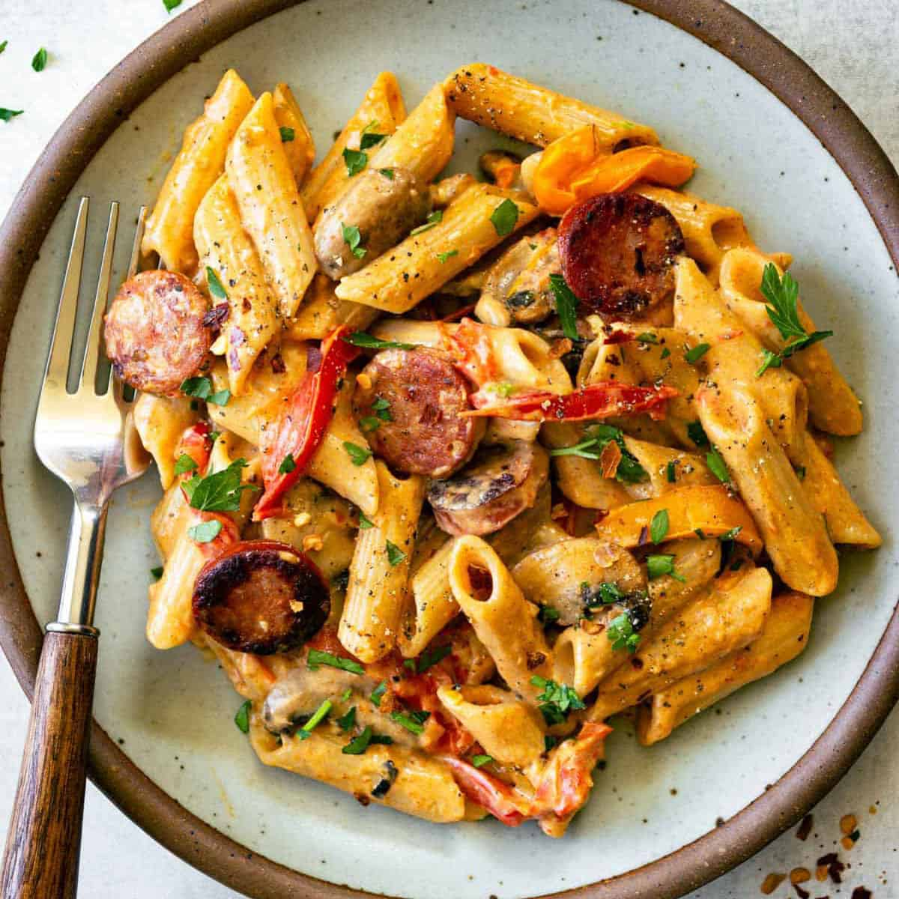

Creamy Cajun Pasta

This Cajun Chicken Pasta is ridiculously creamy, packed with warm spicy flavor, and, to top it all off, it's cheesy too! This easy pasta dinner, filled with juicy bites of chicken, is one of our favorite restaurant style dishes to make at home.
Ingredients
- 12 ounces penne pasta
- 2 tablespoons butter
- 1 tablespoon olive oil
Cooking Steps
- Boil 6 cups of water in a large pot over high heat and cook the pasta according to the package directions. Drain the pasta, rinse with cold water (so it doesn't clump, can also toss a little olive oil on it to prevent clumping) and set aside.
- While the pasta is cooking, add the butter, olive oil and onion to a large pot over medium-high heat and cook for 3-4 minutes, or until the onion becomes translucent.
- Add the red bell pepper, garlic, Cajun seasoning, basil, paprika, ground black pepper, salt and cayenne pepper. Stir to combine and cook for 3 more minutes or until the bell pepper starts to become soft.